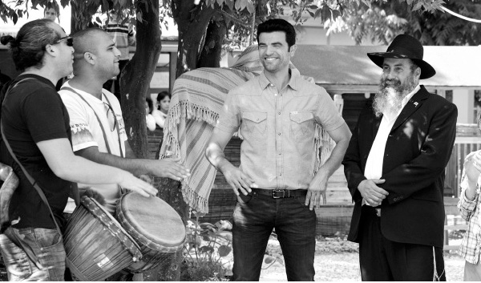

Moshiach: The Star of the Show
You may have read and seen pictures of the makeover of the Vaspi home. The Vaspis, who underwent major tragedies, are unusually hospitable and giving people. The “ Extreme Makeover Yisroel” program chose to renovate this Lubavitcher family’s home. * Beis Moshiach spoke with R’ Einav Vaspi and got a behind the scenes look at the work his family does and what it was like to be the stars of this TV program .
|
 Whoever knows the Vaspi family from Yesod HaMaala, remembers the hard times the family underwent in recent years, as well as their endless generosity. Along with the tragedies – the terrible car accident they were in, and the drowning of their daughter Menucha Rochel, they always stood out as a family who gives without limits to whoever is in need, no matter whom. |
They live on the banks of the Jordan River and their home is always open. Whoever is in need of a roof over their head, a hot meal, or a place to sit, knows how to get to the Vaspis. Up until two months ago, there was no lock on their house. The Vaspi home is always open, day and night, summer and winter.
Someone who was evicted from his home said that he lived for half a year in a caravan that the Vaspis made available to him in their yard. A single mother of eleven children was helped by the Vaspis when her rental lease expired and she could not rent another apartment. Others found their way to the Vaspis when they began their t’shuva process and sought a warm home that would adopt them during this sensitive time.
Unofficially, the Vaspi home is a Chabad house in every respect. They host dozens of people every Shabbos and hold farbrengens every Thursday night.
***
A few years ago, the family car was hit by a bus. Their daughter Shaina was the most severely injured and had a leg amputated. After a long rehabilitation, she returned home with her parents determined to increase their chesed and to have a class for girls in their house.
They had barely gotten over the accident when they were hit with another tragedy. Their two year old daughter drowned. This left the family reeling but immediately after the Shiva, Einav and his wife Anat decided to designate part of their yard to host spacious classrooms for the girls’ school they had started, which until then had been housed temporarily in caravans. A preschool that they had started ten years ago also got its own permanent building.
In the summer after the tragedy, the family, along with friends and residents of the moshava, inaugurated the classrooms and preschool. These schoolrooms became an inseparable part of the Vaspi home, just like all their acts of chesed and hospitality. One of their close friends explained that Einav and Anat knew that their consolation would come through increasing their activities and becoming more involved in chinuch.
DOING FOR EVERYBODY ELSE
Throughout this time, the Vaspi family lived in an old house. They invested all their money into their chesed and chinuch activities. Their home, which had become the home of hundreds of people, was dilapidated. The roof was threatening to cave in, the foundations were shaky, and the tiles had fallen off. This didn’t bother the Vaspis, but their friends decided to see to it that they had a house that was far more suitable for people who devoted their lives to others.
I asked Einav how he built classrooms and a preschool in his yard when his own house was not in great shape. He said, “Before Menucha Rochel died, we had set aside a sum of money to renovate the house, but we accrued debt at the schools and decided to dip into those savings and pay off the debt. Then the Rebbe sent us renovations that helped us more than what we had originally planned to do.”
The Vaspis found themselves the stars of a new reality television program (modeled after the American version), during the course of which the construction team built the Vaspis a new house in five days. The work was filmed and became a series called “Extreme Yisroel,” in which the family and their chesed work were highlighted.
The program generated huge interest on the part of Israelis of all walks of life and made a huge Kiddush Hashem. The tens of thousands of Jews who watched the program saw, many for the first time in their lives, the energy of the Rebbe’s shluchim who devote their lives to their fellow Jews. When speaking to Einav about the program, it is important to him to emphasize that it was all about conveying a message of Geula and hiskashrus to the Rebbe. Indeed, during the course of the program, viewers were exposed to the belief in the Rebbe as Melech HaMoshiach as the production team stressed the presence of the Rebbe in the lives of the Vaspi family. Throughout the program the hosts of the show spoke about the Rebbe, hiskashrus and shlichus. In one of the scenes the viewers saw the children playing with cards with the most valuable one being the “Melech HaMoshiach” card.
During the five days that the house was being renovated in front of the cameras, the production team worked hand in hand with the Lubavitcher friends of Einav from the yishuv, and this close quarters interaction led to many discussions about emuna, Judaism, and hiskashrus to the Rebbe. Rabbi Yaakov Ben-Ari, the shliach to the kibbutzim, showed up every day and spoke with the members of the team.
While this was going on, the show’s producers sent the Vaspi family on vacation to a yishuv in the Golan. In their absence, Einav’s friends Eren Cohen and Kobi Lubinsky took over their activities.
After five days, the Vaspis returned to the house that used to have a leaky ceiling, no kitchen cabinets, and was falling apart. They discovered, to their delight, a rebuilt home that was designed with their needs in mind. The front part of the house contains the living room and the area used for public activities, while the inner part of the house contains the bedrooms. This is a huge change for the family which was used to their entire home being open to the public. The change is not meant to adversely affect their work, G-d forbid, but to augment it.
The renovation team compensated for the loss of public space as a result of the new division with a spacious garden designed to serve everyone on the yishuv and, of course, the work the family does. In the center of the yard there is a place for the Thursday night farbrengens which are attended by dozens of people.
SURPRISING PHONE CALL
A few days after the broadcast of the program, we spoke with Einav. He said he had gotten a lot of feedback after the television broadcast, and the producers had told him that the program had made a huge splash and they were constantly getting reactions to it.
Einav explained how it came about. “One day, the producer of the program called me and said she had heard about our family from a neighbor who had once lived near us in Yesod HaMaala. She thought that ours is a story of public interest and they wanted to help renovate our house to suit our needs. They sent a team who examined the house and found it suitable for their program. The roof was in terrible shape and in general, the entire house was in poor condition. They saw that the house needed a lot of work and that this would help us in what we do.
“Part of their investigating had to do with our work and they became very excited by it.”
The program emphasized the connection with the Rebbe. It seems that the producers really connected with the idea of shlichus and decided to pass along the Rebbe’s messages.
“While the work on the house was going on the atmosphere was very special. Everyone felt a sense of shlichus, the workers as well as the producers of the show. They all said that the project with us gave them a different feeling about the entire program. The producers said that they were happy they started with our house because it gave the staff the motivation to continue with the program. They felt a strong connection to the work that we do here. The entire week was like one long farbrengen.”
Did they understand the significance of a Lubavitcher home which is a Chabad house in every respect?
“We did not say it’s a Chabad house, but they chose to define it as such and to emphasize that aspect of it. It was very clear that they had connected to the spiritual idea behind all the activities. When I saw the receptiveness of all the people involved in the production, I had the sense that the Jewish people are ready for the Geula. It was very clear to everyone that they were completely invested in trying to do good. Starting from the producer, the editor, the host, the construction crew, all of them were tuned in to every detail. They tried very hard to see to it that it was all done on the highest level, from a spiritual standpoint, and that it would suit the spiritual ideal that the house represents.
“They consulted with R’ Yossi Ginsburg, rav of the Chabad community in Ramat Aviv, when questions arose. Many segments were deleted from the program only because they were not 100% from a religious propriety perspective. When, in production, it was felt that certain segments were not in keeping with the spirit of the program, they were edited out. We consulted constantly, even about the narration.
“When we left the house, the producer sent us the girls’ tambourine and said it was possible they wouldn’t finish the program because Moshiach would come, so we had better take the tambourine along.”
PRIME TIME FARBRENGEN
Did you talk with the production team during the program?
“I wasn’t there, but they constantly told me what was going on and there was the feeling that something big was happening. People wrote to the Rebbe through the Igros Kodesh and opened to astonishing answers. Some got into one-on-one conversations. One woman on the team committed to koshering her kitchen. They kept calling me with questions that came up. I remember that when the designer showed up for the first time to see the house, he sat down near our library and began reading sifrei Chassidus.”
What did the people of Yesod HaMaala think of all this?
“They were very involved. People were always going over to help. That was an important element of the deep connection that was created. All the locals who went to see the production told the team that this was the right choice of a place to renovate. We were told that in some cases people wonder, why were they picked to have their home renovated, but in this case, everyone was totally into it and were happy about it. I think that if they did a film about what went on behind the scenes, it would be fascinating.
“We kept on hearing the contractor and the producer saying, ‘b’ezrat Hashem.’ The producer also told us that there was no way they could finish the production within five days, but miracles occurred. By the way, the host/narrator of the program, Amos Tamam, received a gift from us, the book Modaot Yehudit on Tanya. He put the title page on his blog and said that it had a great impact on him. He also said he received a lot of positive feedback on his blog.”
One of the scenes in the program is the farbrengen that takes place in Einav’s yard every Thursday evening. Local residents come by and sit around a fire and farbreng. Einav says this is the highlight of the week.
“There is a farbrengen every Thursday. We say l’chaim and farbreng. Sometimes a guest mashpia comes. We always have music and a barbecue. The atmosphere is fantastic. People open up and talk. This farbrengen is the anchor for the entire week.”
During the program an improvised farbrengen takes place with Einav’s friends from Yesod HaMaala and the people from the television program. The farbrengen is filmed to show the viewers what takes place at the Vaspi home.
“It was a real farbrengen,” says Einav. “Although I wasn’t there, I heard that it was powerful. All the participants put on t’fillin and made good resolutions. They wanted to show what the farbrengen we have every Thursday is like, but it turned out to be an authentic farbrengen.
“We told the editors about the clear and encouraging answer we opened to in the Rebbe’s letters about our work in Yesod HaMaala. The producer insisted that R’ Yossi find the answer for them and then had it engraved on a piece of eucalyptus wood. They hung it in the entrance to the house so everyone can see it. In general, they were very respectful of the work and realized that our outreach is an inseparable part of our home.”
A SCHOOL L’ILUI NISHMAS THEIR DAUGHTER
Eren Cohen, one of Einav’s friends, was a regular throughout the program and was involved in the construction while Einav was away from home. He is a Lubavitcher Chassid who lives in Kibbutz Chulta which is near Yesod HaMaala. He and Einav grew up together and each of them became a baal t’shuva.
Eren describes the unique educational enterprises that operate in the Vaspi yard:
“Ten years ago he started a preschool, on his own, in a building on the yishuv. Then a girls’ program was started which is attended by girls in the area. The classes in the Vaspi home turned into a full-fledged school.
“It became necessary to vacate the building that the preschool was in and so the preschool moved to a caravan in Einav’s backyard. When the school for the girls grew, it became necessary to have proper classrooms for them. Then another section of the yard was designated for them with several caravans.
“A school for boys was started and we asked the local city council for land in order to build a proper school, one for girls, one for the preschool, and one for boys.
“That year, the Vaspis’ two year old passed away and Einav and his wife decided to keep the preschool and the girls’ school on their property. We built classrooms and a building for the preschool.
“Many people from the yishuv took part in the construction. The fact that the classes now had a formal place of their own made them more respectable.
“Most of the girls who attend the school are from the area, from the kibbutzim and yishuvim or from nearby cities like Kiryat Shmoneh and Rosh Pina. They want individual attention in a natural setting with animals, and a Chassidishe atmosphere.
“Another amazing thing about the program,” says Einav, “has to do with the certification for running the girls’ school. We are dealing with the bureaucracy now. The Education Ministry ordered all private schools to be closed, as a result of which there is an attempt to deny us a permit. Exposure on the program helped us because the people opposing us got to see what we do in a very impressive way.
“I would like to give kudos to the entire staff of the preschool, girls’ school, and boys’ school, R’ Benny Maslis, the principal of the boys’ school, and Mrs. Halperin, principal of the girls’ school. They all do outstanding work and boruch Hashem, they are always going ‘from strength to strength.’”
NOURISHING BODY AND SOUL FOR THE TOURIST TRADE
Einav works along with the shliach and rav of the yishuv, R’ Yaakov Reitzes, who has been the rav in Yesod HaMaala for decades.
“R’ Reitzes arranges the programs and we try to help. Every Yom Tov we do outreach activities throughout the region with the thousands of soldiers who serve in the area. We try to see to it that not a single soldier along the border will miss out on the joy of the holiday. On Chanuka we give out menorahs and donuts. On Purim we distribute mishloach manos and arrange the reading of the Megilla. During the second Lebanon war we circulated among the thousands of soldiers, put t’fillin on with them, and brought them joy. Our outreach extended into Lebanon, at all the outposts.
“Of course, there are all the daily and weekly activities, like Shabbos hospitality for young people from the yishuv and the areas around it, or guests who come for Shabbos. We recently had the Chabad yeshiva of Ohr Yehuda for Shabbos and the driver loved the Shabbos atmosphere. A week ago he called and asked if he could spend Shabbos with us because he wants to keep Shabbos again and he feels that this is the best place for him.”
A major part of Einav’s work focuses on the Jewish tourists in the area. The tourist service that they run also helps finance their other projects. As part of the tourist package that they provide, they offer meals for groups of tourists who come from all over the country and the world, guided jeep tours, Shabbos hospitality and organized trips. Under the umbrella of Jewish tourism they help the shluchim and many Chabad houses who are interested in providing their mekuravim with authentic Jewish experiences, for body and soul. Many religious families also enjoy Einav’s jeep trips or exclusive gourmet meals on the banks of the Jordan.
“Previously, all the work was done in our home. People who needed help would come at all hours and the house was really always open. The producers of the program wanted to make a separation between the private part of the house and the public part. Thanks to them, there is more of a separation between the home and our work. This is only meant to help us in our work so we will be more effective.
“Now there is a clear delineation between the various parts of the house and the yard in a way that makes it user-friendly for the various mosdos and the family. The yard is divided so that there are low walls within the yard that separate the preschool and the school, and the private part of the yard. There are also areas that are open to all like the petting zoo and places to sit.
“It was important to me that with the new design people see that this is the Rebbe’s home. The house used to be completely open and when people would ask me why, I would say I don’t understand the question since this is the Rebbe’s home. Today, the house projects a respectable image, and the new design enhances that respect so that the entire house conveys respect which is fitting for the Rebbe’s house. The new design, which includes a library in the entrance, gives you a good feeling so that everyone feels good in the house. I think that is how the Rebbe’s house ought to be.”
Sholom Ber Crombie. "Moshiach: The Star of the Show." Beis Moshiach, no. 892 (August 13, 2013).